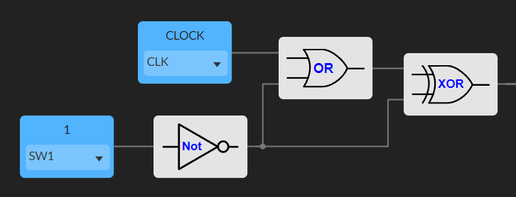

En elektronisk terning på en FPGA
Sju LED-er i terningmønster, én knapp, én Lattice ICE40 FPGA. Hold inne knappen og terningen ruller gjennom 1–6 raskere enn du klarer å følge med. Slipp, og den stopper på et tall. Mitt første praktiske FPGA-prosjekt, bygd i IceStudio, det grafiske alternativet til å skrive Verilog.
Hvordan «tilfeldigheten» fungerer her
Den er ikke tilfeldig. Det er en 3-bits teller som ruller 1 → 6 → 1, drevet av et klokkesignal styrt av knappen:
tick = (CLK + Button) XOR ButtonNår knappen er sluppet, er tellerinngangen permanent lav. Når knappen holdes, følger tellerinngangen CLK og tikker på FPGA-ens fulle hastighet, millioner av ganger raskere enn en finger rekker å slippe. Når du slipper, har telleren i praksis glemt hvor den startet. Det gir illusjonen av en ekte terning uten noen reell entropikilde.

LED-logikk
Sju LED-er, men bare fire logiske grupper (senter, to NØ/SV-gule, to NV/SØ-gule,
to sideoransje). Med tellerutgangene (C, B, A) i binær form,
faller en liten sannhetstabell ut:
Rød = A
Gul / = B + C
Gul \ = C
Oransje = B · CImplementert i IceStudio som et knippe logikkporter rett ut fra tabellen.

Om strømbegrensningen
Første design hadde en seriemotstand per LED (~65 Ω for rød, 60 Ω for oransje, 55 Ω for gul ved 20 mA). Det realiserte designet bruker én felles 66,6 Ω-motstand for alle LED-ene. Hver LED kjøres litt under det den tåler, men de lyser fortsatt rent, og den totale lysstyrken varierer mindre mellom sidene fordi jo flere LED-er som tennes, jo mindre strøm får hver av dem.
Målte strømmer per side: 13 mA (1) → 19 mA (6). Realisert effekt ≈ 0,044 W (1) → 0,063 W (6), godt under de teoretiske tallene i designet med motstand per LED.